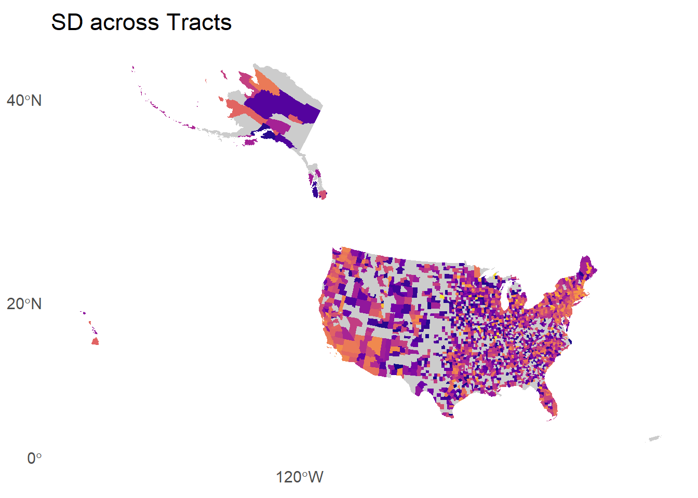
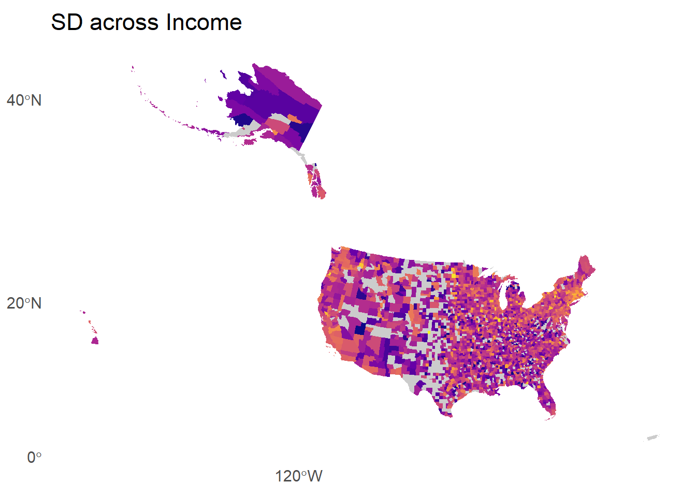
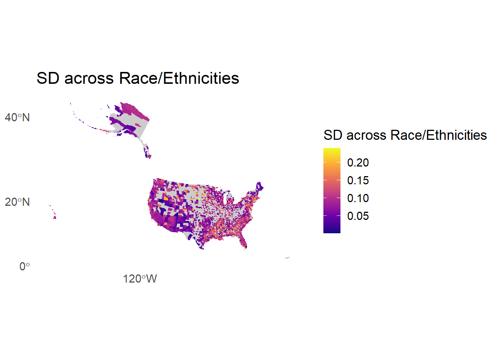
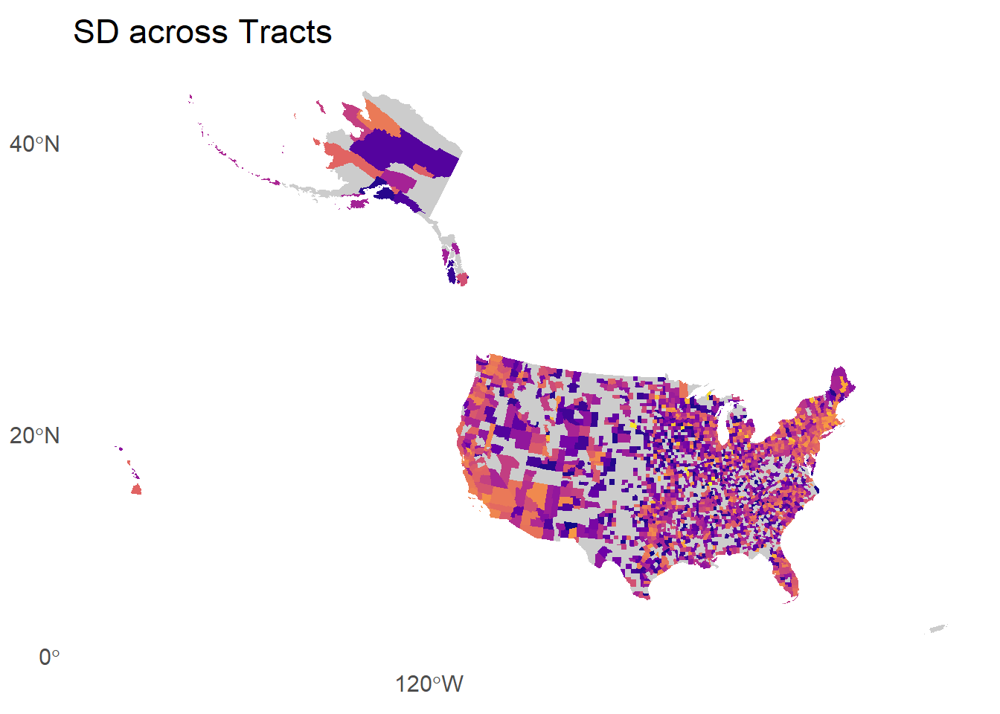
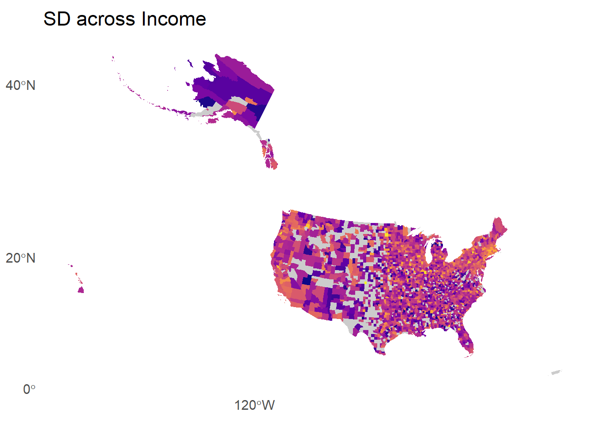
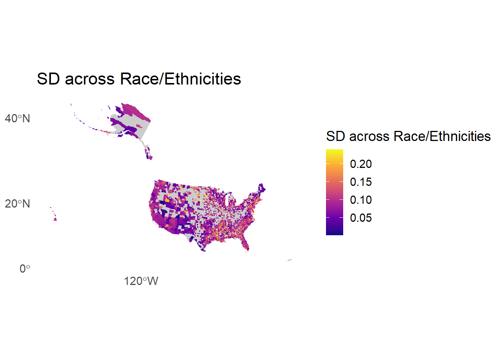
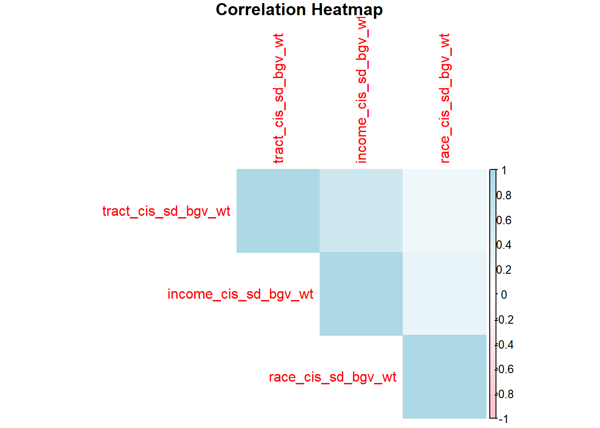
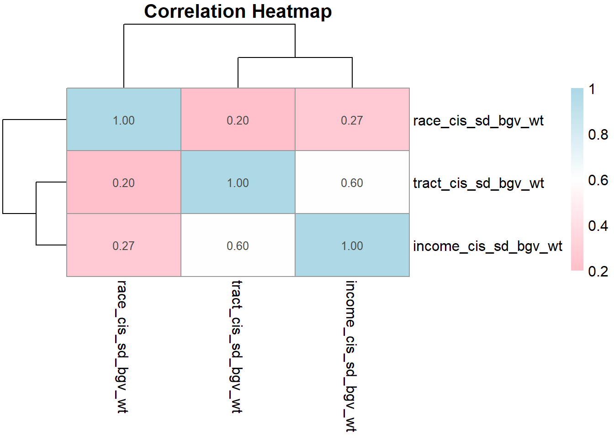

The coasts (California and New England) appear to have high tract and income disparities but possibly lower race disparities. Perhaps we should do some regional and/or state-level exploration.





Tract disparities and income disparities are more strongly correlated than tract disparities and race disparities. Income and race disparities are /slightly/ more correlated than tract and race disparities. The correlations below are calculated using Pearson’s correlation coefficient and assume Normality and linearity.


The strongest correlation occurs between tract and income, weakest between tract and race. All correlations are significant. The correlations below are calculated using Spearman’s correlation test which is robust to nonlinear relationships.
Spearman's rank correlation rho
data: hist_data$race_cis_sd_bgv_wt and hist_data$income_cis_sd_bgv_wt
S = 789697472, p-value < 2.2e-16
alternative hypothesis: true rho is not equal to 0
sample estimates:
rho
0.2800483
Spearman's rank correlation rho
data: hist_data$tract_cis_sd_bgv_wt and hist_data$income_cis_sd_bgv_wt
S = 635021642, p-value < 2.2e-16
alternative hypothesis: true rho is not equal to 0
sample estimates:
rho
0.5802439
Spearman's rank correlation rho
data: hist_data$tract_cis_sd_bgv_wt and hist_data$race_cis_sd_bgv_wt
S = 630540796, p-value < 2.2e-16
alternative hypothesis: true rho is not equal to 0
sample estimates:
rho
0.2258608 


# A tibble: 4 × 4
State median_tract median_race median_income
<chr> <dbl> <dbl> <dbl>
1 AZ 0.0989 0.0728 0.0827
2 DE 0.142 0.124 0.137
3 FL 0.120 0.102 0.0985
4 NV 0.114 0.0783 0.108 # A tibble: 10 × 4
State median_tract median_race median_income
<chr> <dbl> <dbl> <dbl>
1 AR 0.0874 0.106 0.105
2 FL 0.120 0.102 0.0985
3 GA 0.0828 0.111 0.101
4 KY 0.0707 0.100 0.0989
5 LA 0.0976 0.130 0.110
6 MS 0.0796 0.116 0.0960
7 ND 0.0837 0.138 0.105
8 NE 0.0517 0.0872 0.0857
9 SC 0.0899 0.113 0.111
10 SD 0.0699 0.117 0.107 
| Missing Data by Category | ||
|---|---|---|
| Category | Count | Percent Missing |
| Race | 1204 | 38.29517 |
| Tract | 1030 | 32.76081 |
| Income | 521 | 16.57125 |
| Summary of Homeownership Rates by RUCC Group | |||||||||
|---|---|---|---|---|---|---|---|---|---|
| RUCC Group | race_missing | income_missing | tract_missing |
Data Availability
|
Summary Statistics (Median, Min, Max)
|
||||
| Race Data Available (%) | Income Data Available (%) | Tract Data Available (%) | Race (Median, Min, Max) | Income (Median, Min, Max) | Tract (Median, Min, Max) | ||||
| Rural | 963 | 418 | 817 | 50.81716 | 78.65169 | 58.27375 | 0.0884 ( 2e-04 , 0.2396 ) | 0.1051 ( 2e-04 , 0.275 ) | 0.0699 ( 1e-04 , 0.2452 ) |
| Urban | 241 | 103 | 213 | 79.67960 | 91.31535 | 82.04047 | 0.1012 ( 0.0109 , 0.2251 ) | 0.1376 ( 9e-04 , 0.2602 ) | 0.1268 ( 8e-04 , 0.2321 ) |
| Overall | 1204 | 521 | 1030 | 61.70483 | 83.42875 | 67.23919 | 0.0947 ( 2e-04 , 0.2396 ) | 0.1187 ( 2e-04 , 0.275 ) | 0.0936 ( 1e-04 , 0.2452 ) |
Medians
| Median Values of v153_rawvalue with available data | |
|---|---|
| Variable | Median Value |
| v153_rawvalue with race data | 0.7142033 |
| v153_rawvalue with income data | 0.7303765 |
| v153_rawvalue with tract data | 0.7173714 |